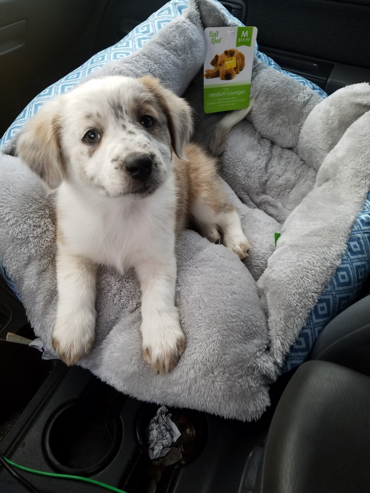
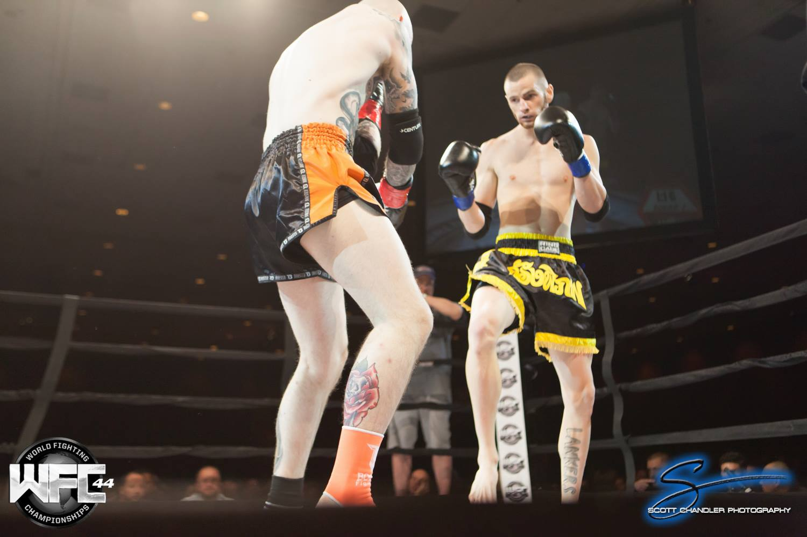

My name is Ethan Thompson and I was born on August 19th of 1991. Making me 26 years old as of 2017, a Leo based on Astrology and a Ram based on the Chinese zodiac. I work as a detail specialist at a Uhaul here in fresno, and at Dollar Tree as a stocker part time. My interests vary and include Magic The Gathering, video games, anime, animals, and Muay Thai. Muay Thai has had a pretty big impact on my life, I first started training in 2011 at UFC gym in north Fresno. 6 months later my coach set me up with my first fight in downtown fresno at the former Radisson hotel, now known as the Double Tree. I had never felt so much fear and nervousness as I was backstage warming up and getting ready to fight another human being. I started to question myself and ask if this was something I really wanted to do, the anxiety that comes with something like that was something ive never felt before. But after the bells rang and the fight started all I could see and think about was my opponent and everything came into focus. I won my first fight by decision, starting my carreer as an Amateur kickboxer. I went on to fight 10 more times all over California and Nevada, going 7-3-1 and winning two state titles and one promotional title.  With that success I became ranked in the top 10 in the world as an Amateur. The journey was full of ups and downs, with various injuries and fights often falling through which can be quite frustrating. But the process has taught me a lot about myself and what the human body, mind, and spirit are capable of.
Another big part on my life is my dog Nicci. I came across her litter on Craigslist and immediately knew I wanted one. Her mother was a Pitbull Austrailian Shepherd mix, while her dad was a Queensland Heeler Austrailian Shepherd. Making for quite an intersting coloring and personality mix. She is a pretty smart and obedient dog, but has so much energy she can often be seen runing full speed from room to room around the apartment for no particular reason, leasping over anything in her path. She definitely influences and controls a lot of my day to day life. Puppies are needy creatures.